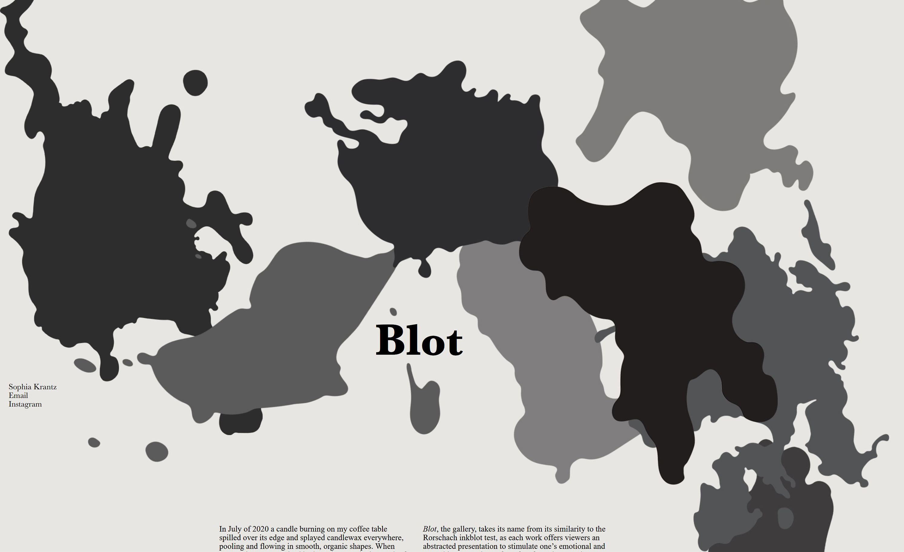
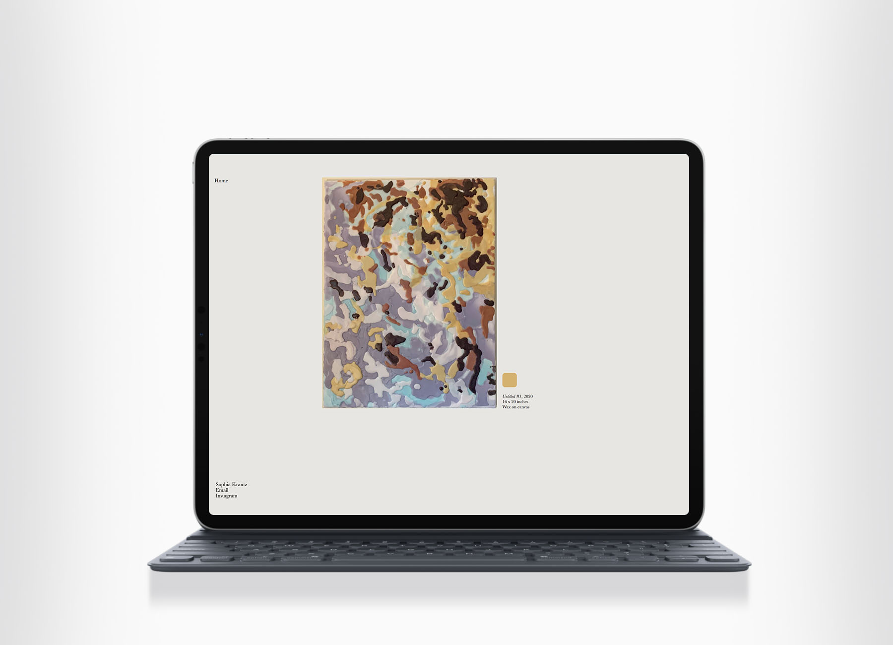
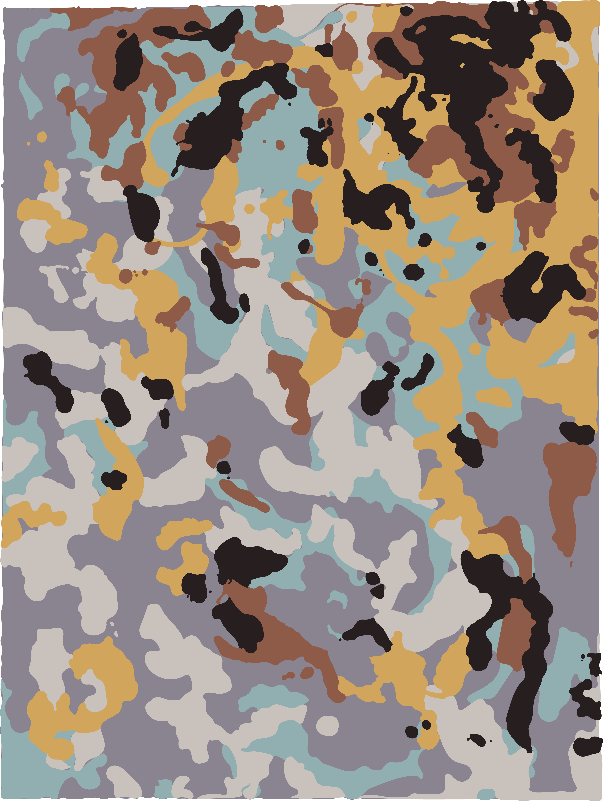
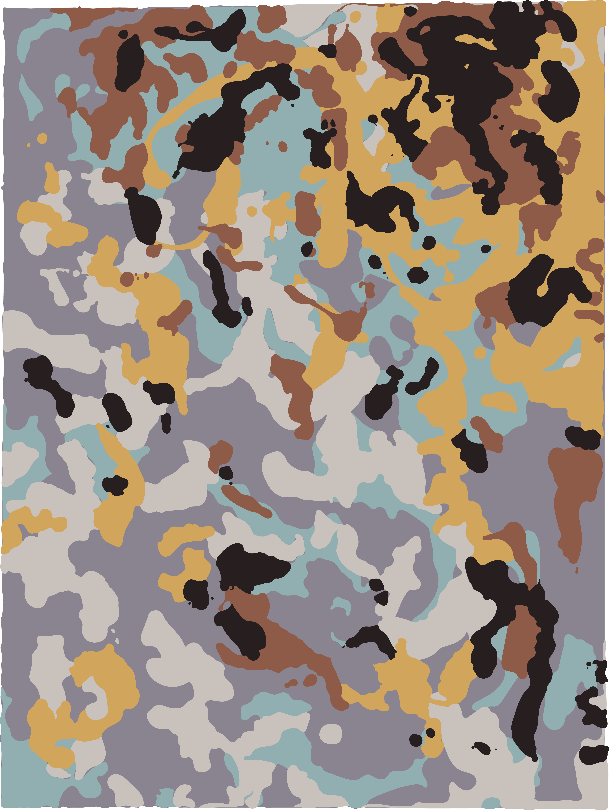
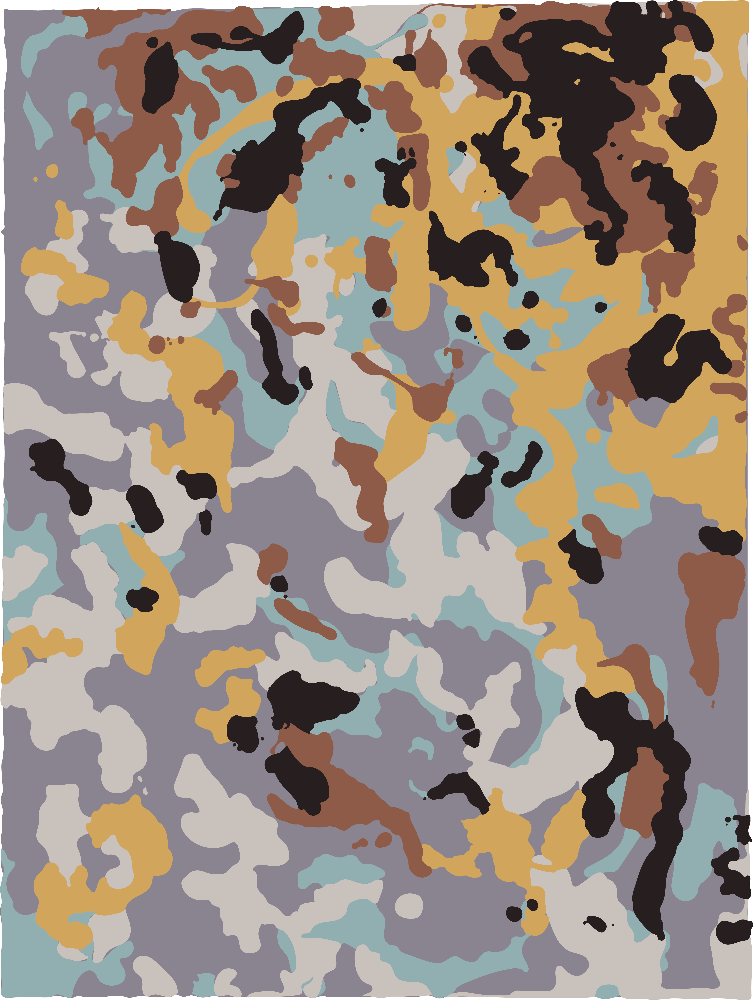

Website Design and Encaustic Paintings
January 2021
Blot.gallery is a gallery microsite built to house the Blot collection of encaustic paintings and their digital iterations. The works, created as physical pieces, were photographed and animated virtually as a means of separating the in-person and online experiences of the collection. The Blot collection was intended as an interactive exhibit for visitors to see as well as touch, and the microsite reflects that personality in encouraging visitor interactivity with the works.

 


